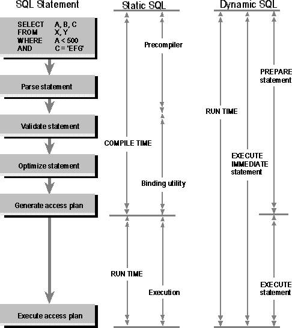

Although static SQL works well in many situations, there is a class of applications in which the data access cannot be determined in advance. For example, suppose a spreadsheet allows a user to enter a query, which the spreadsheet then sends to the DBMS to retrieve data. The contents of this query obviously cannot be known to the programmer when the spreadsheet program is written.
To solve this problem, the spreadsheet uses a form of embedded SQL called dynamic SQL. Unlike static SQL statements, which are hard-coded in the program, dynamic SQL statements can be built at run time and placed in a string host variable. They are then sent to the DBMS for processing. Because the DBMS must generate an access plan at run time for dynamic SQL statements, dynamic SQL is generally slower than static SQL. When a program containing dynamic SQL statements is compiled, the dynamic SQL statements are not stripped from the program, as in static SQL. Instead, they are replaced by a function call that passes the statement to the DBMS; static SQL statements in the same program are treated normally.
The simplest way to execute a dynamic SQL statement is with an EXECUTE IMMEDIATE statement. This statement passes the SQL statement to the DBMS for compilation and execution.
One disadvantage of the EXECUTE IMMEDIATE statement is that the DBMS must go through each of the five steps of processing an SQL statement each time the statement is executed. The overhead involved in this process can be significant if many statements are executed dynamically, and it is wasteful if those statements are similar. To address this situation, dynamic SQL offers an optimized form of execution called prepared execution, which uses the following steps:
Prepared execution is still not the same as static SQL. In static SQL, the first four steps of processing an SQL statement take place at compile time. In prepared execution, these steps still take place at run time. However, they are performed only once; execution of the plan takes place only when EXECUTE is called. This helps eliminate some of the performance disadvantages inherent in the architecture of dynamic SQL. The next figure shows the differences between static SQL, dynamic SQL with immediate execution, and dynamic SQL with prepared execution.

Processing static and dynamic SQL statements